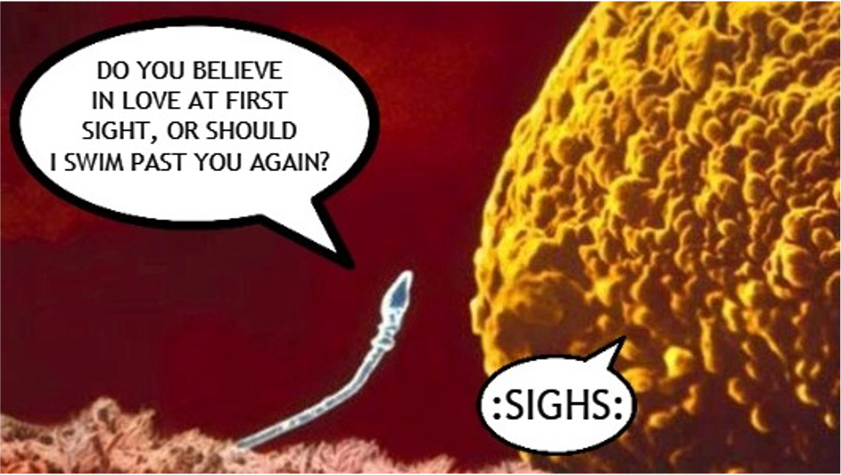

3.1 Lecture 4: Sexual Reproduction

3.1.1 Keywords
| 英文 | 中文 |
|---|---|
| Sexual Reproduction | 有性生殖 |
| Meiosis | 减数分裂 |
| Sperm | 精子 |
| Egg | 卵子 |
| Fertilization | 受精 |
| Zygote | 受精卵 |
| Haploid | 单倍体 |
| Diploid | 二倍体 |
| Homologous chromosomes | 同源染色体 |
3.1.2 Lesson outline
A. What is sexual reproduction?
1. Sexual reproduction produces an offspring when genetic materials from two
different sex cells combine.
a. The female sex cell, a(n) egg, forms in an ovary.
b. The male sex cell, a(n) sperm, forms in a testis.
2. During a process called fertilization, an egg cell and a sperm cell join together. The
new cell that forms is called a(n) zygote.
B. Diploid Cells
1. Organisms that reproduce sexually make two kinds of cells—body cells and sex cells.
2. Body cells are diploid; they have pairs of chromosomes.
3. If a zygote has too many or too few chromosomes, it will not develop properly.
4. Different organisms have different numbers of chromosomes.
5. Homologous chromosomes are pairs of chromosomes that have genes for the same traits arranged in the same order.
C. Haploid Cells
1. Sex cells are haploid; they have only one chromosome from each pair of chromosomes.
2. In meiosis, one diploid cell divides and makes four haploid cells.
3.1.3 Homework
Matching
1. G
2. B
3. H
4. C
5. I
6. A
7. D
8. F
9. E
Multiple Choice Questions
10. A
11. B
Short Answer Questions
12. Sexual reproduction is the production of an offspring that results when the genetic material from two different cells combine.
(Hint: Check “how to write a definition” in extension)
s
13. A zygote is a new cell that forms when an egg cell and a sperm cell join during fertilization.
(Hint: Check “how to write a definition” in extension)
s
14. A diploid cell has pairs of chromosomes and is located in body cells. A haploid cell has only one set of chromosomes and is located in sex cells.
(Hint: a pair or chromosomes/two sets of chromosomes vs. one chromosome from each pair/one set of chromsomes)
3.1.4 Extension
How to write a definition?
A formal definition is based upon a concise, logical pattern that includes as much information as it can within a minimum amount of space. The primary reason to include definitions in your writing is to avoid misunderstanding with your audience. A formal definition consists of three parts:
- The term (word or phrase) to be defined
- The class of object or concept to which the term belongs
- The differentiating characteristics that distinguish it from all others of its class
For example:
- Water (term) is a liquid (class) made up of molecules of hydrogen and oxygen in the ratio of 2 to 1 (differentiating characteristics).
- Comic books (term) are sequential and narrative publications (class) consisting of illustrations, captions, dialogue balloons, and often focus on super-powered heroes (differentiating characteristics).
- Astronomy (term) is a branch of scientific study (class) primarily concerned with celestial objects inside and outside of the earth’s atmosphere (differentiating characteristics).
Sources:
1. https://owl.purdue.edu/owl/general_writing/common_writing_assignments/definitions.html
2. https://www.sjsu.edu/aanapisi/docs/DefinitonLessonPlanbyEdSams.pdf